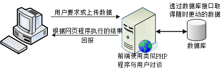

20.1 WWW 的簡史、資源以及伺服器軟體
你知道網路為什麼會這麼流行嗎？其實都是 WWW 造成的啦。早在 1993 年左右，鳥哥初次接觸到網路， 當時的網路較熱門的大概就是一些資源下載的 FTP 網站以及很多文字熱烈討論的 BBS 站了。 資料雖然豐富，不過，總是覺得少了點什麼。後來上了研究所，為了課業需要， 經常連上台灣的學術網路 (TANET) 進行一些學術資料的檢索，當時大約是 1996 年左右。 因為上網就是要找資料而已，所以就慢慢的很少使用網路了。
過了幾年後，再次使用圖形介面的作業系統，竟然發現只要點幾個小按鈕，就會有很多網路上花花綠綠的文字與圖案， 有的網站甚至提供影音的特效，當時真是相當的訝異！不過，由於圖形影像的視覺方面要比 BBS 純文字的資料吸引人，自然造成很多人喜歡流連在網際網路上，人潮多當然就有商機！由於奇貨可居，才有後來 90 年代末期的瀏覽器大戰，這個商業大戰也造成後來 WWW 標準不被某些瀏覽器所支援的後果。
這些年由於搜尋引擎、個人網誌 (blog)、社群網站 (例如 facebook 等)、智慧手機等的流行，又將網際網路推向另一個新境界！啊！ 要學的東西真是很多啊～@_@。底下讓我們來瞭解瞭解什麼是 WWW 以及他所需要的伺服器軟體，還有一些瀏覽器相關的資訊吧！
20.1.1 WWW 的簡史、HTML 與標準制訂 (W3C)
網際網路 (TCP/IP) 會這麼熱門，主要是 80 年代的 email 以及 90 年代之後的 WWW 服務所造成的！尤其是 WWW 這個玩意兒。 WWW 是 World Wide Web 的縮寫，其中 Web 有廣播網的意思存在， 所以簡稱為全球資訊網的就是了。WWW 可以結合文字、圖形、影像以及聲音等多媒體，並透過可以讓滑鼠點擊的超連結 (Hyperlink) 的方式將資訊以 Internet 傳遞到世界各處去。
與其他的伺服器類似的，你要連結上 WWW 網站時，該網站必需要提供一些資料， 而你的用戶端則必需要使用可以解析這些資料的軟體來處理，那就是瀏覽器啦！簡單的來說，你可以這樣瞧一瞧 WWW server/client 的相關性：
 圖 20.1-1、WWW 伺服器與用戶端瀏覽器之間的連線相關性
圖 20.1-1、WWW 伺服器與用戶端瀏覽器之間的連線相關性
從上面的圖示當中，我們大概可以得到一些觀念：
- WWW 伺服器不但需要一個可讓用戶端瀏覽的平台，還需要提供用戶端一些資料才行！
- 伺服器所提供的最主要資料是超文件標籤語言 (Hyper Text Markup Language, HTML)、多媒體檔案 (圖片、影像、聲音、文字等，都屬於多媒體或稱為超媒體)。
- HTML 只是一些純文字資料，透過所謂的標籤 (<tag>) 來規範所要顯示的資料格式；
在用戶端，透過瀏覽器的對 HTML 以及多媒體的解析，最後呈現在使用者的螢幕上。
HTML 的格式
如上所提到的相關資訊，我們知道伺服器端需要提供用戶端一些資料，而這些資料其實主要都以 HTML 的格式來呈現的。那麼什麼是 HTML 呢？我們拿鳥哥的網站來看一下好了。你可以使用任何一個瀏覽器連結到 http://linux.vbird.org，然後在其上的頁面上按下滑鼠右鍵， 選擇察看原始碼，你就能發現該網頁是如何寫成的了。
<!DOCTYPE html PUBLIC "-//W3C//DTD XHTML 1.0 Transitional//EN"
"http://www.w3.org/TR/xhtml1/DTD/xhtml1-transitional.dtd">
<html xmlns="http://www.w3.org/1999/xhtml" xml:lang="zh-TW" lang="zh-TW">
<head>
....一些此頁面的資訊解釋的標頭資料，例如 title 與整體化設計等等....
</head>
<body style="margin:0; padding:0">
....在瀏覽器顯示的畫面中，實際放置在瀏覽器上面的資料則寫於此....
</body>
</html>
HTML 之所以被稱為標籤語言就如同上面的表格所示，他是由很多 <tag> 所組成的，除了 <!DOCTYPE> 的部分是在宣告底下的語法應該用第幾版的 HTML 解析之外，HTML 主要是由 <html> </html> 所包含起來， 而在其中又分為兩大區塊，一個是與標頭有關的 <head> </head> 區塊， 包括該網頁所使用的編碼格式與抬頭等等。另一部份則是 <body> </body> 所含有的實際網頁內容資料啦。
HTML 不在本文的介紹內，你可以在市面上找到很多相關的書籍。而傳統的 HTML 4 實際上已經不足以滿足某些美工人員及程式設計師的需求，因此，目前還有改善 HTML 顯示的 CSS 樣式表， 可以讓很多程式互相取用的 XML，還有最新一代的 HTML5 等等，都值得參考喔。
- WWW 所用的協定及 WWW 伺服器簡史--就是講古時間
知道了 WWW 的 server/client 架構後，再來我們要討論的是，那 WWW 是怎麼來的啊？ 伯納斯-李 (Tim Berners-Lee) 在 1980 年代為了更有效率的讓歐洲核子物理實驗室的科學家可以分享及更新他們的研究成果， 於是他發展出一個超文件傳輸協定 (Hyper Text Transport Protocol, HTTP)。 如同前面提到的，在這個協定上面的伺服器需要軟體，而用戶端則需要瀏覽器來解析伺服器所提供的資料。 那麼這些軟體怎麼來的？
為了讓 HTTP 這個協定得以順利的應用，大約在 90 年代初期由伊利諾大學的國家超級電腦應用中心 (NCSA, http://www.ncsa.illinois.edu/) 開發出伺服器 HTTPd (HTTP daemon 之意)。HTTPd 為自由軟體，所以很快的領導了 WWW 伺服器市場。 後來網景通訊 (Netscape) 開發出更強大的伺服器與相對應的用戶端瀏覽器，那就是大家曾經熟悉的 Netscape 這套軟體啦。這套軟體分為伺服器與瀏覽器，其中瀏覽器相對便宜，不過伺服器可就貴的嚇人了。 所以，在伺服器市場上主要還是以 HTTPd 為主的。
後來由於 HTTPd 這個伺服器一直沒有妥善的發展，於是一群社群朋友便發起一個計畫，這個計畫主要在改善原本的 HTTPd 伺服器軟體，他們稱這個改良過的軟體為 Apache，取其『一個修修改改的伺服器 (A patch server)』的雙關語！ ^_^！這個 Apache 在 1996 年以後便成為 WWW 伺服器上市佔率最高的軟體了 (http://httpd.apache.org/)。
- 瀏覽器 (browser) 大戰與支援的標準
雖然 WWW 越來越重要，但相對的來說，用戶端如果沒有瀏覽器的話那麼他們當然就無法去瀏覽 WWW 伺服器所提供的資料。為了搶佔瀏覽器的市佔率，於是在 90 年代末期微軟將 IE 瀏覽器內建在 Windows 作業系統內，此一決定也讓當時相當廣泛使用的 Netscape 瀏覽器 (Navigator) 市佔率急速下降。 後來網景公司在 1998 年左右將瀏覽器的原始碼部分開放成為自由軟體，採用 Mozilla 通用授權 (MPL) 。
Mozilla (http://www.mozilla.org/) 這個計畫所開發的軟體可不止瀏覽器而已，還包括郵件處理軟體及網頁編輯軟體等等。 當然啦，其中最出名的就是瀏覽器軟體『火狐狸 (firefox)』啦！那這玩意兒與 IE 有啥不同？ 由於 IE 是整合在 Windows 作業系統核心內， 加上改版的幅度太慢，甚至 IE 使用的 HTML 標準語法解析行為都是微軟自訂的標準， 並不全然符合網際網路上的標準規範 (W3C, http://www.w3.org/)，導致伺服器端所提供的資料並無法在所有的瀏覽器上都顯示出相同的樣式， 而且用戶端也容易受到網路攻擊。
firefox (http://moztw.org/) 的發展就標榜小而美，因此程式相當的小，所以執行效能上面非常的快速，此外，對於超文件的解析上面， firefox 主要依據 w3c 所制訂的標準來發展的，所以任何以 w3c 的標準開發的網站，在 firefox 上面就能夠得到設計者所希望的樣式！目前 firefox 已經針對市面上最常見到的 Windows/Linux/Unix 等作業系統來進行支援，大家可以多多使用喔！^_^
而為了加快 javascript 的程式運作，並且加快瀏覽的速度，Google 自己也推出一個瀏覽器，稱為 chrome 瀏覽器， 這個瀏覽器就如 google 的搜尋引擎一般，強調的就是快速！快速！更快速！因此，如果你想要瀏覽器不要花花綠綠， 就是風格簡約，強調速度感，那麼 google 的這個 chrome 自由軟體瀏覽器也可以玩玩的！
由上面的介紹我們可以稍微歸納一下：
- WWW 是依據 HTTP 這個協定而來的，分為伺服器端與用戶端；
- Apache 是一個伺服器端的軟體，主要依據 NCSA 的 HTTPd 伺服器發展而來，為自由軟體；
- Mozilla 是一個自由軟體的開發計畫，其中 firefox 瀏覽器是相當成功的作品。
- 在撰寫自己的網頁資料時，盡量使用 W3C 所發佈的標準，這樣在所有的瀏覽器上面才能夠順利的顯示出你想要的樣子。
20.1.2 WWW 伺服器與瀏覽器所提供的資源設定 (URL)
現在我們知道 WWW 伺服器的重點是提供一些資料，這些資料必需要是用戶端的瀏覽器可以支援顯示才行。 那麼這些資料是什麼類型啊？很簡單啊，當然大部分就是檔案囉。如此說來，我們必需要在伺服器端先將資料檔案寫好， 並且放置在某個特殊的目錄底下，這個目錄就是我們整個網站的首頁了！ 一般來說，這個目錄很可能是在 /var/www/html/ 或者是 /srv/www/。我們的 CentOS 預設在 /var/www/html 喔。
那麼瀏覽器如何取得這個目錄內的資料呢？你必需要在瀏覽器的『網址列』輸入所需要的網址才行。 這個網址就對應到 WWW 伺服器的某個檔案檔名就是了。不過，現今的瀏覽器功能實在很多，他不只可以連上 WWW ，還可以連上類似 FTP 之類的網路通訊協定。所以你得要在網址列輸入正確的網址，這個網址包括這樣：
<協定>://<主機位址或主機名稱>[:port]/<目錄資源>
網址列的意義
上頭就是我們常常聽到的 URL (Uniform Resource Locator) 啦！以斜線作為分段， 它可以這樣被解釋：
協定：
瀏覽器比較常支援的協定有 http, https, ftp, telnet 等等，還有類似 news, gopher 等。 這個協定在告知瀏覽器『請你利用此一協定連接到伺服器端』的意思。舉例來說，如果你下達： http://ftp.ksu.edu.tw 這表示瀏覽器要連結到 崑山科大的 http (亦即 port 80) 的意思。如果是 ftp://ftp.ksu.edu.tw 則代表連結到 ftp (port 21) 啦！ 因為使用的協定不同，所以當然回應的資料也不相同的。不過， 萬一對方伺服器的埠口啟動在非正規的埠號，例如將 http 啟動在 port 81 時，那你就得要這樣寫： http://hostname:81/ 。
主機位址或主機名稱：
就是伺服器在網際網路所在的 IP 位置。如果是主機名稱的話，當然得要透過名稱解析器囉！ 一般來說，雖然使用 IP 就能夠架設 WWW 網站，不過建議你還是申請一個好記又合法的主機名稱比較好！
目錄資源：：
剛剛不是提到首頁的目錄嗎？在首頁目錄下的相對位置就是這個目錄資源啦。 舉例來說，鳥哥的網站 www 資料放置在我主機的 /var/www/html/ 當中，所以說：
- http://linux.vbird.org --> /var/www/html/
- http://linux.vbird.org/linux_basic/index.php --> /var/www/html/linux_basic/index.php 另外，通常首頁目錄底下會有個特殊的檔案名稱，例如 index.html 或 index.??? 等。舉例來說，如果你直接按下： http://linux.vbird.org 會發現其實與 http://linux.vbird.org/index.php 是一樣的！ 這是因為 WWW 伺服器會主動的以該目錄下的『首頁』來顯示啦！
所以啦，我們的伺服器會由於瀏覽器傳來的要求協定不同而給予不一樣的回應資料。那你瞭解到網址列的意義了嗎？
- WWW server/client 間資料傳輸的方式
如果瀏覽器是以 http://hostname 的型態來向伺服器要資料時，那麼瀏覽器與伺服器端是如何傳遞資料的呢？ 基本上有這幾種方法：
GET 就是瀏覽器直接向 WWW 伺服器要求網址列上面的資源，這也是最常見的。此外，使用 GET 的方式可以直接在網址列輸入變數喔。舉例來說，鳥哥的討論區有一篇提問的智慧， 他的網址是：『http://phorum.vbird.org/viewtopic.php?t=96』，發現那個 ?t=96 了嗎？ t 就是變數， 96 就是這個變數的內容。如果你將問號後面的資料拿掉時，瞧瞧會出現什麼後果？ 這麼說，你可以明白 GET 的處理了吧？
POST 這也是用戶端向伺服器端提出的要求，只是這個要求裡面含有比較多的資料就是了。 舉例來說，討論區裡面不是常常有留言的選項嗎，如果你選擇留言的話不是會在瀏覽器冒出一個框框讓你填入資料嗎！ 當按下傳送後，那些框框內的資料就會被瀏覽器包起來傳送至 WWW 伺服器了。 POST 與 GET 不相同喔， GET 可以在網址列取得用戶端所要求的變數，不過 POST 就不是使用網址列的功能了。
HEAD 伺服器端回應給 Client 端的一些資料檔頭而已；
OPTIONS 伺服器端回應給 Client 端的一些允許的功能與方法；
DELETE 刪除某些資源的舉動。
常見的是 GET 這個項目啦！如果有大量資料由用戶端上傳到 WWW 伺服器端時，才會使用到 POST 這個項目。 你還是得需要注意一下這些舉動，因為後續的登錄檔分析內容都是使用這種動作來分析的呦！
20.1.3 WWW 伺服器的類型： 系統、平台、資料庫與程式 (LAMP)
以目前的網路世界來說，市佔率較高的 WWW 伺服器軟體應該是 Apache 與 IIS 這兩個玩意兒， Apache 是自由軟體，可以在任何作業系統上面安裝的，至於 IIS 則是 Windows 家族開發出來的， 僅能在 Windows 作業系統上面安裝與執行。由於作業系統平台不一樣，所以其上安裝的軟體當然也不相同。 底下就讓我們來聊一聊目前網站的一些特色吧！
- 僅提供使用者瀏覽的單向靜態網頁
這種類型的網站大多是提供『單向靜態』的網頁，或許有提供一些動畫圖示，但基本上就僅止於此啦！ 因為單純是由伺服器單向提供資料給客戶端，Server 不需要與 Client 端有互動，所以你可以到該網站上去瀏覽， 但是無法進行進行資料的上傳喔！目前主要的免費虛擬主機大多是這種類型。所以，你只要依照 HTML 的語法寫好你的網頁，並且上傳到該網站空間上，那麼你的資料就可以讓大家瀏覽了！
- 提供使用者互動介面的動態網站
這種類型的網站可以讓伺服器與使用者互動，常見的例如討論區論壇與留言版，包括一些部落格也都是屬於這類型。 這類型的網站需要的技術程度比較高，因為他是藉由『網頁程式語言』來達成與使用者互動的行為， 常見的例如 PHP 網頁程式語言，配合 MySQL 資料庫系統來進行資料的讀、寫。整個互動可以使用下圖來說明：
 圖 20.1-2、動態網站的網頁程式語言與資料庫介面
這就是所謂的伺服器端工作任務介面 (Server Side Include, SSI)，因為不論你要求的資料是什麼，其實都是透過伺服器端同一支網頁程式在負責將資料讀出或寫入資料庫， 處理完畢後將結果傳給用戶端的一種方式，變動的是資料庫內的資料，網頁程式其實並沒有任何改變的。這部份的網頁程式包括 PHP, ASP, Perl...很多啦！
另外一種互動式的動態網頁主要是在用戶端達成的！舉例來說，我們可以透過利用所謂的 Java scripts 這種語法， 將可執行的程式碼 (java script) 傳送給用戶端，用戶端的瀏覽器如果有提供 java script 的功能， 那麼該程式就可以在用戶端的電腦上面運作了。由於程式是在用戶端電腦上執行， 因此如果伺服器端所製作的程式是惡意的，那麼用戶端的電腦就可能會遭到破壞。 這也是為啥很多瀏覽器都已經將一些危險的 java script 關閉的原因。
另外一種可在用戶端執行的就是 flash 動畫格式，在這種動畫格式內還可以進行程式設計， 因此用戶端只要擁有可以執行 flash 動畫的軟體，那就可以利用這個軟體來達到互動式的對談。 這些都算是動態網站所提供的功能喔！
從上面的說明你可以知道動態網站是目前比較熱門的，像是近兩年來如同雨後春筍一般冒出來的個人部落格 (blog) 就是很經典的動態網站之一。而由圖 20.1-2 我們也知道要做成這樣的動態網站你必需要有：
- 支援的作業系統：讓所需要的軟體都能夠安裝執行啊；
- 可運作的 WWW 伺服器：例如 Apache 與 IIS 等 WWW 伺服器平台軟體；
- 網頁程式語言：包括 perl, PHP, JSP, CGI, ASP 等等都算是啦！
資料儲存之資料庫系統：包括 MySQL, MSSQL, PostgreSQL 以及甲骨文 (Oracle) 等等。
LAMP 平台的說明
在整個平台設計上面，目前常見的有兩大系統，一個是 Linux 作業系統上面，搭配 Apache + MySQL + PHP 等而達成，這個系統被稱為 LAMP。另一個則是微軟的 IIS + MSSQL + ASP (.NET) 伺服器。在能見度與市佔率方面，應該還是以 LAMP 為主吧！在 LAMP 裡面除了 Linux 之外，其他三個小東西就讓我們來談談先：
Apache (http://www.apache.org)
1995 年以前就有很多的 WWW 伺服器軟體，其中以 HTTPd 佔有率較高。 後來 HTTPd 經過多次臭蟲的修訂後，才在 1995 年後發佈 Apache (A patch server) 的啦！這東西就是主要提供 WWW 的伺服器平台，後面談到的 PHP 必須要在這玩意兒上才能運作！
MySQL (http://www.mysql.org/)
傳統的檔案讀取是很麻煩的，如果你只要讀取該檔案當中的一小部分，系統還是會將整個檔案讀出來， 若又有多人同時讀取同一個檔案時，那就會造成效能與系統上的問題，所以才會有資料庫系統的推出。 資料庫其實是一種特殊格式的檔案，這種檔案必需要透過特殊介面 (資料庫軟體) 來進行讀寫。由於這個特殊介面已經針對資料的查詢、寫入做過最佳化設計， 因此很適合多人同時寫入與查詢的工作。
針對資料庫的語法有所謂的 SQL 標準語法，任何根據這種資料檢索語法發展出來的資料庫，就稱為 SQL 資料庫。 比較知名的自由軟體資料庫系統有 MySQL 及 PostgreSQL ，其中 MySQL 的使用率又比較高一些。 MysQL 可以透過網頁程式語言來進行讀寫的工作，因此很適合例如討論區、論壇等的設計， 甚至很多商業網站的重要資料也是透過 MySQL 這個資料庫軟體來存取的呢！
PHP (http://www.php.net/)
按照官方的說法來說，PHP 是一個工具，他可以被用來建立動態網頁，PHP 程式碼可以直接在 HTML 網頁當中嵌入， 就像你在編輯 HTML 網頁一樣的簡單。所以說， PHP 是一種『程式語言』，這種程式語言可以直接在網頁當中編寫， 不需要經過編譯即可進行程式的執行。由於具有：自由軟體、跨平台、容易學習及執行效能高等優點， 目前是很熱門的一個設計網頁的咚咚喔！你可以在市面上找到很多相關的書籍來參考的。
Tips: 事實上，如果光學會 Linux 與架站，對你自己的競爭力還是不夠的，可以的話，多學一些 MySQL 的 SQL 語法，以及類似 PHP, JSP 等跨平台的網頁程式語言，對你的未來是很有幫助的喔！

20.1.4 https： 加密的網頁資料 (SSL) 及第三方公正單位
關於 HTTP 這個傳輸協定當中，你必需要知道的是：『這個傳輸協定傳輸資料是以明碼傳送的』， 所以你的任何資料封包只要被監聽竊取的話，那麼該資料就等於是別人的啦！那想一想， 你有過上線刷卡的經驗嗎？上線刷卡只要輸入你信用卡的卡號與相關的截止日期後，就能夠進行交易了。 如果你的資料在 Internet 上面跑時是明碼的情況下，真要命！那你的信用卡不就隨時可能會被盜用？
雖然大多數 Internet 上面的 WWW 網站所提供的資料是可以隨意瀏覽的，不過如同上面提到的， 一些物流交易網站的資料以及關於你個人的重要機密資料當然就不能這樣隨意傳送啦！ 這個時候就有需要用到 https://hostname 這種連線的方式啦！這種方式是透過 SSL 加密的機制喔！
- Secure Socket Layer (SSL)
還記得我們在第十一章的 SSH 伺服器當中介紹過他連線的機制吧？ 就是利用非對稱的 key pair (Public + Private kye) 來組成金鑰，然後透過公鑰加密後傳輸， 傳輸到目標主機後再以私鑰來解密，如此一來資料在 Internet 上面跑就以加密的方式， 想當然爾，這些資料自然就比較安全啦！SSL 就是利用在 WWW 傳輸上面的加密方式之一啦！
當瀏覽器端與 WWW 伺服器端同時支援 SSL 的傳輸協定時，在連線階段瀏覽器與伺服器就會產生那把重要的金鑰！ 產生金鑰後就能夠利用瀏覽器來傳送與接收加密過的重要資料啦！要達成這樣的機制， 你的 WWW 伺服器必需要啟動 https 這個重要的傳輸協定，而瀏覽器則必需要在網址列輸入 https:// 開頭的網址，那兩者才能夠進行溝通與連線。要注意的是，在某些很舊的瀏覽器上面是不支援 SSL 的， 所以在那些舊的瀏覽器上就無法達成 https 的連線啦！
- Certificate Authorities (CA)
想一想 SSL 這個機制有什麼問題？他的問題就是：『那把 Public key 是伺服器產生且任何人都能取得的』！這是什麼問題？因為 public key 可讓任何人取得， 若被釣魚網站取得並且製作一個很類似你網路銀行的網站，並且騙你輸入帳密，要命了！因為你不知道該網站是詐騙集團製作的， 以為 https 就是安全的，如此一來，即使你的資料有加密，但結果，在釣魚網站伺服器端還是能夠取得你輸入的帳密啊！ 這個時候就需要第三方公正單位來幫忙啦！
所謂的 CA 就是一個公認的公正單位，你可以自行產生一把金鑰且製作出必要的憑證資料並向 CA 單位註冊 (講到註冊你就要知道...這東西是要錢的意思！)，那麼當用戶端的瀏覽器在瀏覽時，該瀏覽器會主動的向 CA 單位確認該憑證是否為合法註冊過的，如果是的話，那麼該次連線才會建立，如果不是呢？那麼瀏覽器就會發出警告訊息， 告知使用者應避免建立連線啊。所以說，如此一來 WWW 伺服器不但有公正單位的背書，使用者在建立連線時也比較有保障！
更多關於 SSL 以及 CA 的介紹，可以約略參考一下：
- Apache 的 SSL： http://www.modssl.org/
- CA 組織之一：https://digitalid.verisign.com/server/apacheNotice.htm
20.1.5 用戶端常見的瀏覽器
咱們前面談到 WWW 伺服器是 Server/Client 的架構，而用戶端使用的軟體就是瀏覽器啊！ 目前比較知名的自由軟體瀏覽器主要有兩款，包括 Mozilla 基金會管理的 firefox (火狐狸) 以及 Google 自行推出的 chrome。至於市佔率較高的還有 windows 的 IE。
由於瀏覽器可以連結到網際網路上，所以瀏覽器也有可能被攻擊！ 其中由於 IE 直接內嵌至 Windows 的核心當中，所以如果 IE 有漏洞時，對於系統的損害是很大的！ 因此無論如何，請記得『務必要隨時更新到最新版本的瀏覽器』才行。建議你可以使用 firefox 或 chrome 這些小巧玲瓏的瀏覽器啊！
除了視窗介面的瀏覽器軟體之外，其實還有幾個可以在文字介面底下進行瀏覽與網頁下載的程式，分別是：
- links 與 lynx：文字介面的瀏覽器；
- wget：文字介面下使用來擷取檔案的指令。
這幾個指令我們已經在第五章談過了，請自行前往參考喔！